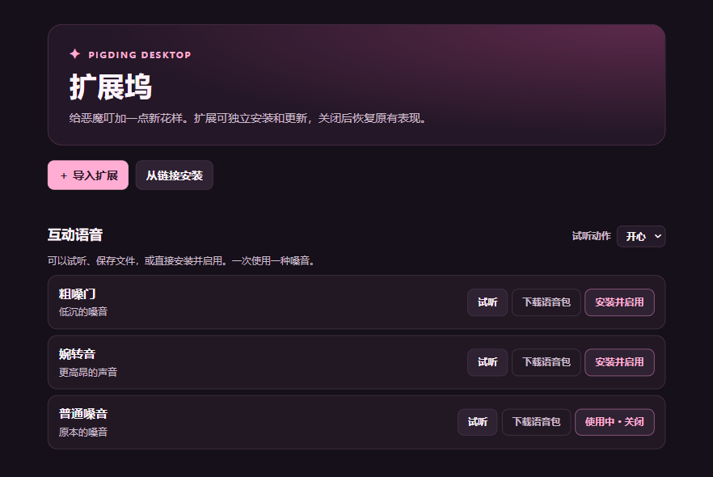

EXTENSION DOCK
想让它回应时发出声音、扇翅飞一段，或者换个炫彩效果？这些都在桌宠的扩展坞里操作。
右键桌面上的恶魔叮，点「扩展坞…」。也可以右键任务栏右下角的恶魔叮图标；如果图标折叠了，先点 ^。
在「互动语音」的「试听动作」里选一个动作，再点喜欢的嗓音旁边的「试听」。满意后点「安装并启用」，然后点桌宠试试。一次只启用一种嗓音，待机和飞行时不会播放语音。
往下找到「轻松试试」，挑一个示例点「安装示例」。到「我的扩展」查看状态，显示「启用」时点一下就会生效。想看它飞，记得在右键菜单里打开「待机随机走动」，然后让它闲一会儿。
到「我的扩展」点「已启用 · 关闭」即可恢复原来的表现；点「卸载」会将它移出列表。只想关掉声音，也能直接点嗓音旁的「使用中 · 关闭」。

点「下载语音包」，把文件保存到电脑。已有 .pigding-extension.json 文件时，在扩展坞顶部点「导入扩展」并选择该文件。如果拿到的是官方扩展链接，可以用「从链接安装」。试听、启用和保存内置语音包都不需要联网。